모빌리티 브랜드 269
자동차와 이동 경험을 통해 기술, 디자인, 라이프스타일을 결합한 모빌리티 브랜드를 연결합니다. 브랜드 아틀라스에 수록된 모빌리티 브랜드 269개를 로고와 함께 모았습니다. 각 항목은 설립 배경, 브랜드 아이덴티티, 로고 변천, 제품과 서비스, 현재 상태를 정리한 상세 페이지로 이어집니다.
다른 산업 보기
기원 국가가 확인된 브랜드는 239개이며 미국 53개, 한국 37개, 영국 23개, 독일 20개, 이탈리아 18개 순으로 많습니다. 설립연도가 확인된 브랜드는 252개이며 가장 오래된 곳은 1810년, 가장 최근은 2021년에 시작했습니다. 시기별로는 1900년 이전 20개, 1900~1949년 89개, 1950~1999년 93개, 2000년 이후 50개입니다. 수록 자료로는 로고 이미지 262개, 로고 변천 자료 14개, 연혁 타임라인 19개를 갖췄습니다. 이 가운데 242개는 공식 웹사이트가 일치하는 위키데이터 개체로 연결해 두었습니다.
모빌리티 브랜드 목록
품질 점수 순 상위는 로고 타일로, 나머지는 가나다순 목록으로 보입니다.
 페라리FERRARI이탈리아 · 1947년
페라리FERRARI이탈리아 · 1947년페라리(Ferrari)는 이탈리아 마라넬로에 본사를 둔 럭셔리 스포츠카 제조사이다.
 아우디Audi독일 · 1909년
아우디Audi독일 · 1909년아우디(Audi)는 독일 잉골슈타트에 본사를 둔 폭스바겐 그룹 산하 프리미엄 자동차 제조사이다.
 볼보Volvo스웨덴 · 1927년
볼보Volvo스웨덴 · 1927년볼보(Volvo)는 1927년 스웨덴 예테보리에서 출발한 자동차 브랜드로, 승용차(볼보 자동차)와 상용차(볼보 그룹)로 분리돼 있다.
 할리데이비슨Harley-Davidson
할리데이비슨Harley-Davidson할리데이비슨은 모터사이클보다 자유와 소속감의 의식을 더 강하게 판매한다.
 두카티DUCATI이탈리아
두카티DUCATI이탈리아두카티(Ducati)는 이탈리아 볼로냐에 본사를 둔 고성능 오토바이 제조 브랜드이다.
사브(Saab)는 1937년 설립된 스웨덴의 항공우주·방산 기업이자, 1947년부터 생산됐다 2011년 종료된 자동차 브랜드를 함께 일컫는다.
 한온시스템Hanon Systems한국 · 1986년
한온시스템Hanon Systems한국 · 1986년한온시스템(Hanon Systems)은 자동차 열관리(공조) 시스템을 제조하는 대한민국의 부품 기업이다.
 메르세데스-벤츠Mercedes-Benz독일
메르세데스-벤츠Mercedes-Benz독일메르세데스-벤츠(Mercedes-Benz)는 독일 슈투트가르트에 본사를 둔 프리미엄 자동차 브랜드이다.
 KG모빌리티KG Mobility한국 · 1954년
KG모빌리티KG Mobility한국 · 1954년KG모빌리티(KG Mobility)는 KG그룹 산하의 대한민국 완성차 제조 기업으로, 옛 쌍용자동차다.
캐딜락은 Mother Design가 2025년에 작업한 브랜드 아이덴티티다.
 유로마스터Euromaster
유로마스터Euromaster유로마스터(Euromaster)는 미쉐린 그룹 산하의 유럽 타이어·자동차 정비 서비스 네트워크이다.
 넥센타이어Nexen Tire한국 · 1942년
넥센타이어Nexen Tire한국 · 1942년넥센타이어(Nexen Tire)는 넥센그룹 계열의 대한민국 타이어 제조 기업이다.
 메르세데스-마이바흐Maybach독일 · 2014년
메르세데스-마이바흐Maybach독일 · 2014년메르세데스-마이바흐(Maybach)는 2013년 기존 마이바흐 브랜드의 철수 이후 2014년에 메르세데스-마이바흐 S클래스를 생산하며 재탄생한…
 폰티액Pontiac1926년
폰티액Pontiac1926년폰티액(Pontiac)은 General Motors가 소유하고 제조하며 판매한 미국의 자동차 브랜드이다.
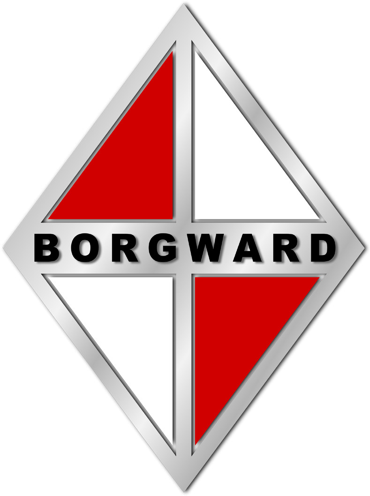
보그바르트Borgward독일 · 1933년보그바르트(Borgward)는 독일 브레멘에 본사를 두고 Carl F.
 아바르트Abarth이탈리아 · 1949년
아바르트Abarth이탈리아 · 1949년아바르트(Abarth)는 1949년 이탈리아계 오스트리아인 Carlo Abarth가 설립한 이탈리아의 레이싱카·도로용 자동차 제조사이자 고성능…
 이스파노 수이사Hispano-Suiza스페인 · 1904년
이스파노 수이사Hispano-Suiza스페인 · 1904년이스파노 수이사(Hispano-Suiza)는 1904년 Marc Birkigt와 Damián Mateu가 설립한 스페인의 자동차 회사이다.
 폭스바겐Volkswagen독일 · 1937년
폭스바겐Volkswagen독일 · 1937년폭스바겐(Volkswagen)은 1937년 독일 베를린에서 설립된 자동차 제조 회사이다.
 VR 그룹VR Group핀란드 · 1995년
VR 그룹VR Group핀란드 · 1995년VR 그룹(VR Group)은 핀란드 정부가 소유한 철도 회사이다.
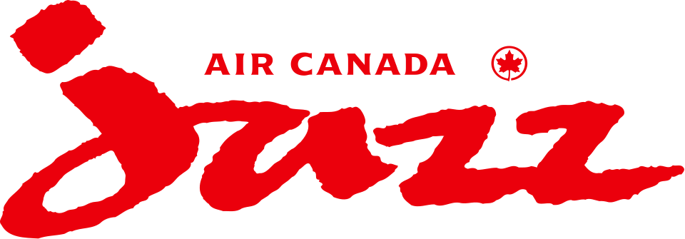
재즈 항공Jazz Aviation캐나다 · 2001년재즈 항공(Jazz Aviation)은 캐나다 노바스코샤주 핼리팩스에 본사를 둔 지역 항공사이다.
 포드 자동차 회사Ford Motor Company미국 · 1903년
포드 자동차 회사Ford Motor Company미국 · 1903년포드 자동차 회사(Ford Motor Company)는 미국 디어본에 본사를 둔 다국적 자동차 제조사이다.
 푸조Peugeot프랑스 · 1810년
푸조Peugeot프랑스 · 1810년푸조(Peugeot)는 프랑스에 기반을 둔 자동차 제조 업체이다.
 붐 테크놀로지Boom Technology미국 · 2014년
붐 테크놀로지Boom Technology미국 · 2014년붐 테크놀로지(Boom Technology)는 오버처(Overture)라는 초음속 여객기를 설계하는 미국 회사이다.
 A.P. 몰러-머스크 그룹Maersk덴마크 · 1904년
A.P. 몰러-머스크 그룹Maersk덴마크 · 1904년A.P. 몰러-머스크 그룹(Maersk)은 덴마크 코펜하겐에 본사를 둔 해운·물류 기업이다.
쏘카Socar한국 · 2011년쏘카(Socar)는 2011년 제주에서 시작한 한국 최대의 카셰어링 모빌리티 기업으로, 2022년 한국거래소에 상장했다.
 콘티넨탈 AGContinental AG독일 · 1871년
콘티넨탈 AGContinental AG독일 · 1871년콘티넨탈 AG(Continental AG)는 1871년에 설립되어 독일 하노버에 본사를 둔 다국적 기업으로, 타이어와 산업용 고무·열가소성…
 파가니Pagani Automobili이탈리아 · 1998년
파가니Pagani Automobili이탈리아 · 1998년파가니(Pagani Automobili)는 고성능 하이퍼카와 첨단 탄소섬유 부품을 전문으로 제조하는 이탈리아의 자동차 회사이다.
 피닌파리나Pininfarina이탈리아 · 1930년
피닌파리나Pininfarina이탈리아 · 1930년피닌파리나(Pininfarina)는 이탈리아 토리노 근교 캄비아노에 본사를 둔 자동차 디자인 회사이자 코치빌더이다.
 폭스바겐 AGVolkswagen Group독일 · 1937년
폭스바겐 AGVolkswagen Group독일 · 1937년폭스바겐 AG(Volkswagen Group)는 독일 볼프스부르크에 본사를 둔 다국적 자동차 제조 복합기업이다.
 비야디BYD Company중국 · 1995년
비야디BYD Company중국 · 1995년비야디(BYD Company)는 중국 광둥성 선전시에 본사를 둔 다국적 제조업 복합기업이다.
 던롭 타이어Dunlop Tyres영국 · 1888년
던롭 타이어Dunlop Tyres영국 · 1888년던롭 타이어(Dunlop Tyres)는 공기압 타이어의 선구자 John Boyd Dunlop이 1888년 영국 벨파스트에서 시작한 타이어…
 재규어 랜드로버Jaguar Land Rover영국 · 2013년
재규어 랜드로버Jaguar Land Rover영국 · 2013년재규어 랜드로버(Jaguar Land Rover)는 영국의 다국적 고급 자동차 제조사이다.
 돈커부트Donkervoort네덜란드 · 1978년
돈커부트Donkervoort네덜란드 · 1978년돈커부트(Donkervoort)는 네덜란드 렐리스타트에 본사를 둔, 수작업으로 제작하는 초경량 스포츠카 제조업체이다.
 드 토마소De Tomaso이탈리아 · 1959년
드 토마소De Tomaso이탈리아 · 1959년드 토마소(De Tomaso)는 1959년 이탈리아 모데나에서 Alejandro de Tomaso가 설립한 스포츠카 제조업체이다.
 르노Renault프랑스 · 1898년
르노Renault프랑스 · 1898년르노(Renault)는 프랑스 최대의 자동차 제조회사이다.
 더 허츠 코퍼레이션The Hertz Corporation미국 · 1918년
더 허츠 코퍼레이션The Hertz Corporation미국 · 1918년더 허츠 코퍼레이션(The Hertz Corporation)은 미국 플로리다주 Estero에 본사를 둔 렌터카 기업이다.
 탤벗Talbot영국 · 1902년
탤벗Talbot영국 · 1902년탤벗(Talbot)은 영국계 프랑스 합작 회사 Clément-Talbot가 1902년에 선보인 자동차 브랜드이다.
 램Ram Trucks미국 · 2010년
램Ram Trucks미국 · 2010년램(Ram Trucks)은 미국의 경량·중형 픽업트럭과 상용차 브랜드이다.
 다임러 컴퍼니Daimler Company영국 · 1896년
다임러 컴퍼니Daimler Company영국 · 1896년다임러 컴퍼니(Daimler Company)는 1896년 H.
 버진 애틀랜틱Virgin Atlantic영국 · 1984년
버진 애틀랜틱Virgin Atlantic영국 · 1984년버진 애틀랜틱(Virgin Atlantic)은 영국 웨스트서식스주 크롤리에 본사를 둔 영국의 항공사이다.
 베스파Vespa이탈리아 · 1946년
베스파Vespa이탈리아 · 1946년베스파(Vespa)는 이탈리아의 스쿠터·모페드 브랜드이다.
 볼보자동차Volvo Cars스웨덴 · 1927년
볼보자동차Volvo Cars스웨덴 · 1927년볼보자동차(Volvo Cars)는 스웨덴의 다국적 럭셔리 자동차 제조사이다.
 스카이팀SkyTeam네덜란드 · 2000년
스카이팀SkyTeam네덜란드 · 2000년스카이팀(SkyTeam)은 2000년 6월 22일에 설립된 항공 동맹이다.
 카바나Carvana미국
카바나Carvana미국카바나(Carvana)는 미국 템피에 본사를 두고 온라인에서 자동차를 판매하는 소매 브랜드이다.
 CSX 코퍼레이션CSX Corporation미국 · 1980년
CSX 코퍼레이션CSX Corporation미국 · 1980년CSX 코퍼레이션(CSX Corporation)은 북미의 철도 운송과 부동산을 중심으로 여러 사업을 운영하는 미국 지주회사이다.
 링컨Lincoln Motor Company미국 · 1917년
링컨Lincoln Motor Company미국 · 1917년링컨(Lincoln Motor Company)은 미국 자동차 제조사 Ford Motor Company의 고급차 부문이다.
 로터스 자동차Lotus Cars영국 · 1952년
로터스 자동차Lotus Cars영국 · 1952년로터스 자동차(Lotus Cars)는 영국에 기반을 둔 스포츠카 제조업체이다.
 복스홀 자동차Vauxhall영국 · 1857년
복스홀 자동차Vauxhall영국 · 1857년복스홀 자동차(Vauxhall)는 1857년 설립된 영국의 자동차 회사이다.
전체 목록
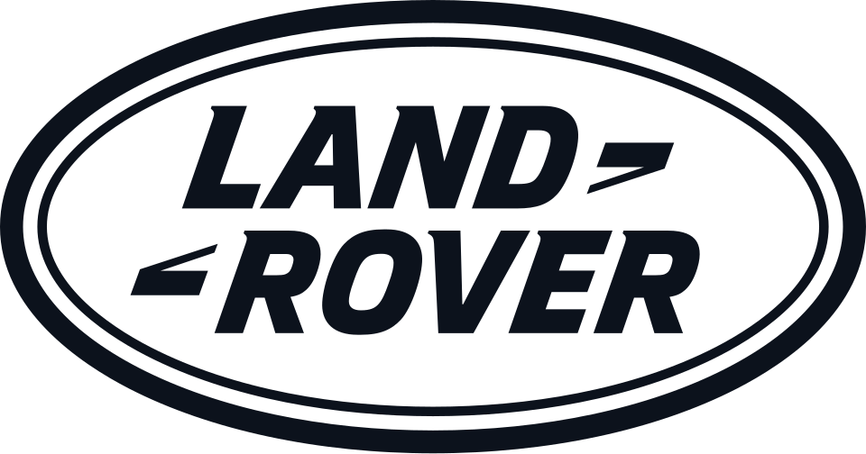
랜드로버 Land Rover랜드로버(Land Rover)는 영국 코번트리에 본사를 둔 자동차 브랜드로, 레인지로버와 디스커버리 등을 중심으로 프리미엄 SUV를 제작한다.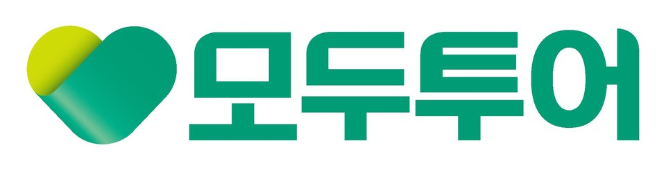
모두투어 Mode Tour하나투어와 경쟁해온 국내 2위권 패키지 여행사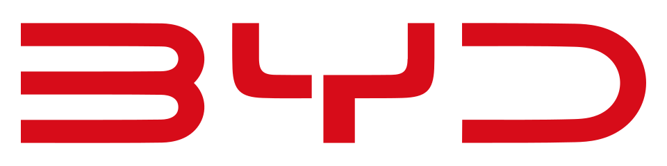
비야디 자동차 BYD Auto비야디 자동차(BYD Auto)는 중국 광둥성 선전시에 본사를 둔 자동차 제조사이다.사우스웨스트 항공 Southwest Airlines사우스웨스트 항공(Southwest Airlines)은 미국의 저비용 항공사이다.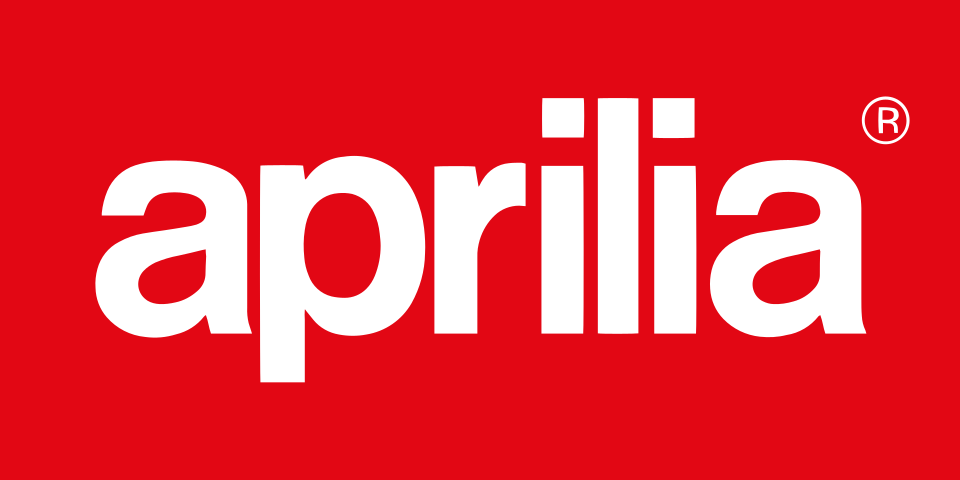
아프릴리아 Aprilia아프릴리아(Aprilia)는 이탈리아 노알레에 본사를 둔 오토바이·스쿠터 제조 브랜드이다.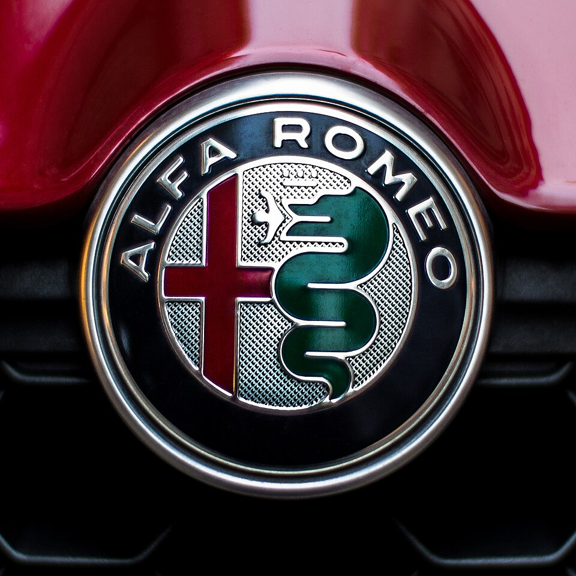
알파 로메오 Alfa Romeo알파 로메오(Alfa Romeo)는 이탈리아 피아트 계열의 자동차 제조업체이다.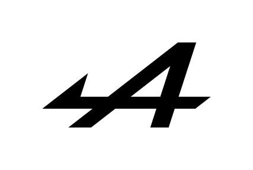
알핀 자동차 Alpine알핀 자동차(Alpine)는 1955년 설립된 프랑스의 레이싱 및 스포츠카 제조업체이다.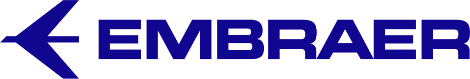
엠브라에르 Embraer엠브라에르(Embraer)는 1969년 창립된 브라질의 항공기 제작 회사로, 민간용 중소형 여객기와 군용 항공기를 생산한다.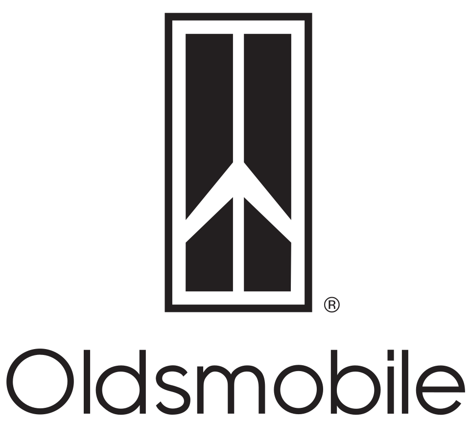
올즈모빌 Oldsmobile올즈모빌(Oldsmobile)은 1897년 랜섬 올즈가 설립해 제너럴 모터스가 생산한 미국의 자동차 브랜드로, 본사를 랜싱에 두고 2004년까지 자동차를…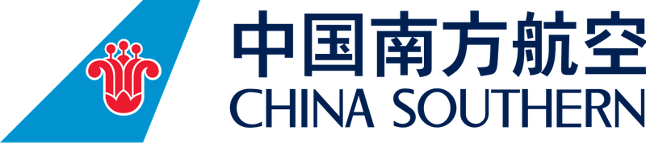
중국남방항공 China Southern Airlines중국남방항공(China Southern Airlines)은 중화인민공화국 광둥성 광저우에 기반을 둔 항공사로, 국내선과 국제선을 운항하며 항공기 규모와 수송객…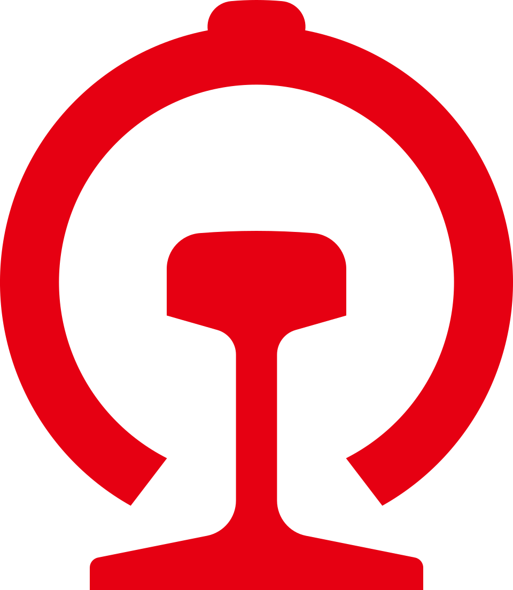
중국철도총공사 China State Railway Group중국철도총공사(China State Railway Group)는 중화인민공화국의 여객철도 및 화물열차 운송을 책임지며 국무원이 관리하는 국유 기업이다.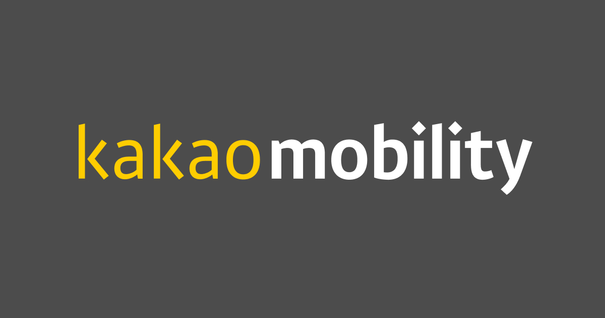
카카오T Kakao T카카오톡 기반으로 택시 호출을 앱으로 옮긴 모빌리티 플랫폼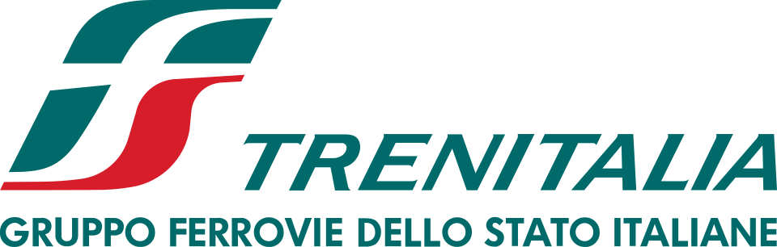
트렌이탈리아 Trenitalia트렌이탈리아(Trenitalia)는 이탈리아의 국유 철도 운영사이다.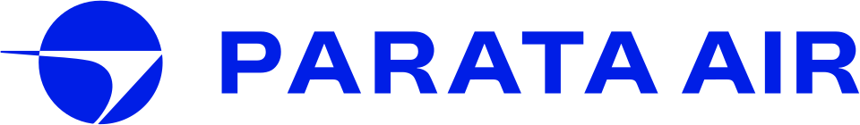
파라타항공 Parata Air파라타항공(Parata Air)은 대한민국의 항공사로, 인천국제공항과 양양국제공항을 허브 공항으로 사용하는 저비용 항공사이다.페라리 엔초 Ferrari Enzo페라리 엔초(Ferrari Enzo)는 이탈리아의 자동차 제조사 페라리가 제작한 미드엔진 스포츠카이다.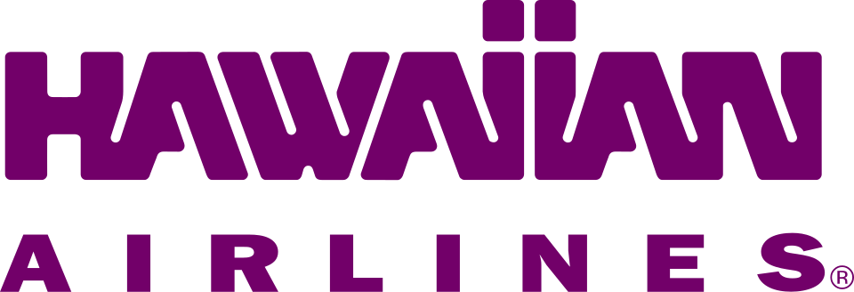
하와이안 항공 Hawaiian Airlines하와이안 항공(Hawaiian Airlines)은 미국 하와이주의 대형 상업 항공사로, 호놀룰루에 본사를 두고 호놀룰루 국제공항을 주요 중심지로 운용하는…하이난 항공 Hainan Airlines하이난 항공(Hainan Airlines)은 중국 하이난성 하이커우시에 본사를 둔 항공사이다.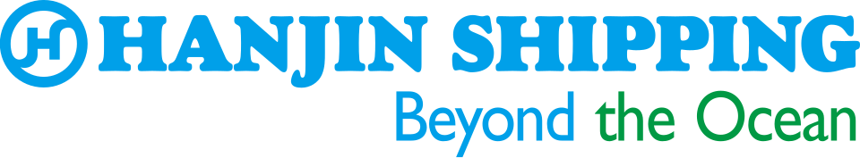
한진해운 Hanjin Shipping한진해운(Hanjin Shipping)은 과거 대한민국의 해운업체였다.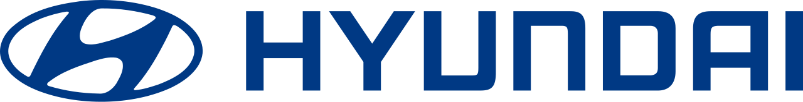
현대자동차 Hyundai Motor현대자동차(Hyundai Motor)는 한국을 대표하는 자동차 기업으로, 인터브랜드 2025 베스트 코리아 브랜드 2위(브랜드 가치 약 27.9조 원)에 올랐다.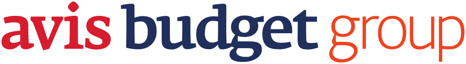
Avis Budget GroupAvis Budget Group은 미국 뉴저지주 Parsippany에 본사를 둔 자동차 렌털 지주회사이다.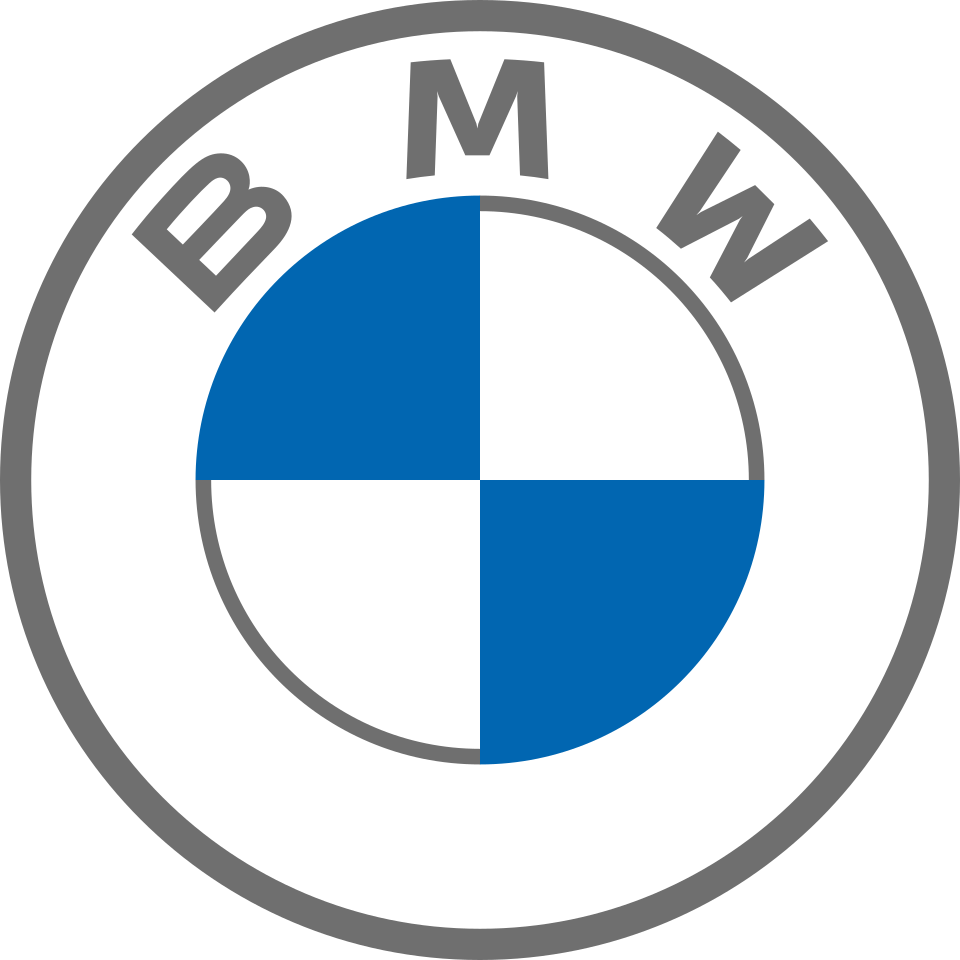
Bavarian Motor Works , Bayerische Motoren WerkeBMW는 이동수단을 만드는 회사를 넘어, 주행 감각과 조형 언어를 함께 설계하는 디자인 브랜드다.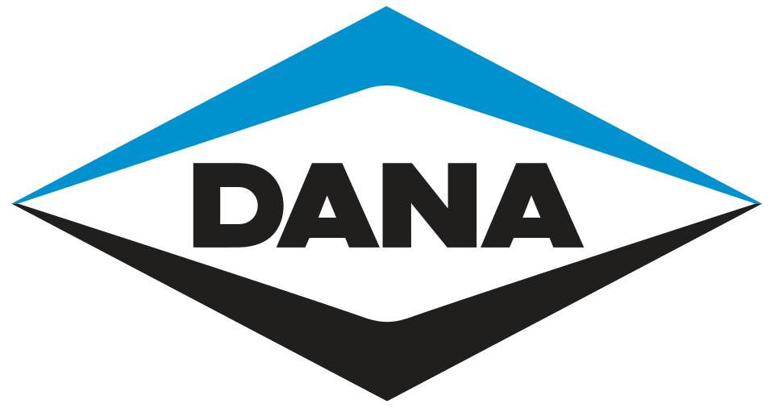
Dana CorporationDana Corporation은 미국의 차량용 액슬, 구동축, 전기동력·열관리·실링·디지털 장비 공급업체로, 내연기관·하이브리드·전기 동력 차량을 대상으로 한다.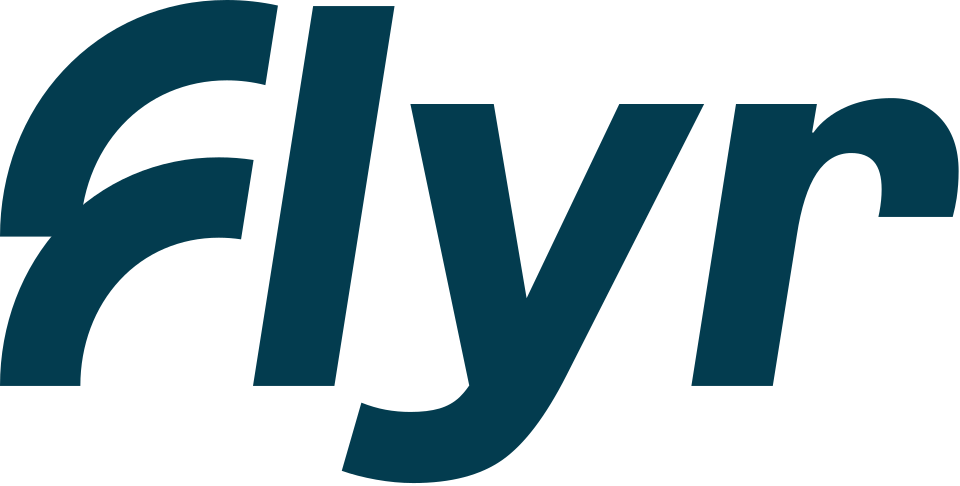
FlyrFlyr는 2020년 노르웨이에서 설립된 저비용 항공사이다.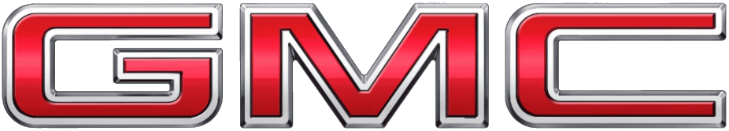
GMCGMC는 미국의 자동차 제조 업체 제너럴 모터스가 상용차, 라이트 트럭, SUV에 쓰는 상표이다.Go-Ahead Group plcGo-Ahead Group plc는 영국 뉴캐슬어폰타인에 본사를 둔 다국적 운송 그룹이다.HL만도 HL MandoHL만도(HL Mando)는 HL그룹 계열의 대한민국 자동차 부품(섀시·제동·조향) 제조 기업이다.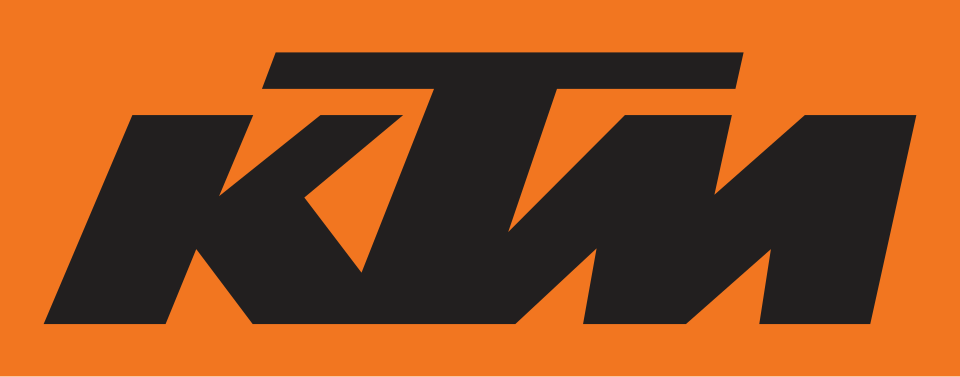
KTMKTM(KTM-Sportmotorcycle AG)은 1934년 오스트리아 Mattighofen에서 창업한 스포츠 모터사이클 제조 업체이다.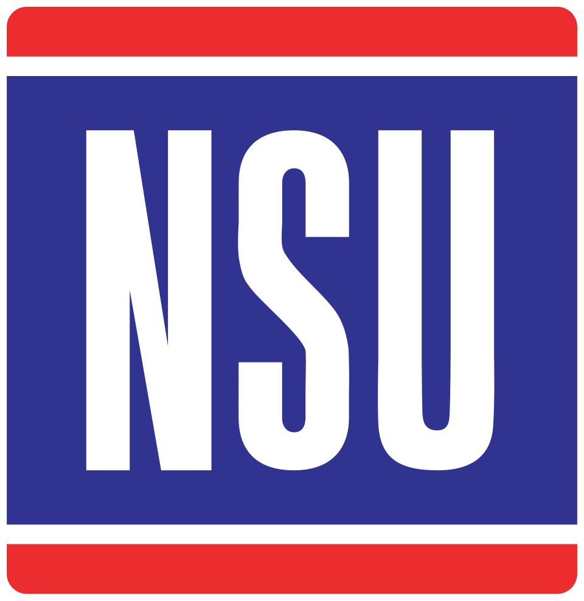
NSU 모토렌베르케 NSU MotorenwerkeNSU 모토렌베르케(NSU Motorenwerke)는 1873년에 설립된 독일의 자동차·오토바이·자전거 제조사이다.